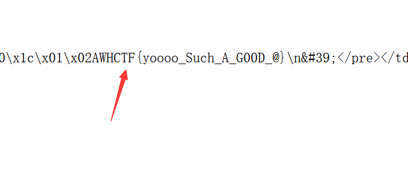
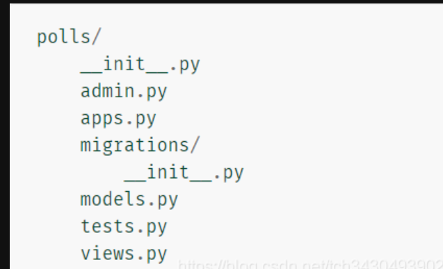

攻防世界-Cat
最后更新时间:
文章总字数:
预计阅读时间:
题目描述：
抓住那只猫
题目解题：
那就随便输几下
测试几下发现只有127.0.0.1有回显，以为是命令执行，但似乎过滤了很多，手工有点难搞，那就用字典fuzz一下看看过滤了什么
看到如此之长的回显，惊呆了，看一下内容
用游览器打开并搜索flag，并没有，只能老老实实的进行代码审计
这里看到敏感词汇django，Python的模块Django之所以存在这个报错原因是因为：
django报错页面将输入的参数传到了后端的django服务中进行解析，而django设置了编码为gbk导致错误编码了宽字符（超过了ascii码范围）。
参考wp：既然是django文件还有前端代码，复制后用游览器打开试试：
将html在浏览器中打开，可以看出后端运行Django，由于字符编码问题而报错。在请求信息POST一项中可以找到参数url，于是大致可以猜想到是PHP向本机的Django发出了POST请求，参数就是我们输入的url。
用游览器打开以后最底下可以看到一串提示：You’re seeing this error because you have DEBUG = True in your Django settings file. Change that to False, and Django will display a standard page generated by the handler for this status code.
也就是说，True in your Django settings file.有可能flag文件在 settings file 中。
直接搜索settings，会发现很多，但是比较特殊的有这个（和settings和database有关，百度搜索）
PHP通常使用cURL库与作为客户端与服务器通信，在cURL库的CURLOPT_POSTFILEDS选项中可以找到突破口，借此我们可以爆出数据库内容
看其他大佬的文档，发现了@有关，php中curl函数@的作用PHP中curl的CURLOPT_POSTFIELDS参数使用细节 - 52php - 博客园
我们使用@进行文件传递，对文件进行读取之后还会把内容传给url参数，如果像上面一样有超出解析范围的编码的时候就会得到错误信息。
1 | |
在文中还需要搜索flag或者ctf等等关键字符：

找到flag
总结
URL编码：HTTP只能传输约定的ASCII字符（即ASCII码值127以内），若要传输其他字符和一些ASCII值在127以内的特殊字符，则需要对其转义——方法是在其十六进制ASCII值前加一个%，注意约定字符也可以编码但是效果一样。URL编码的临界值为%7F（127），由于计算机普遍存在的编码转换问题，我们常常可以在这里fuzz一下。
Django：Django是一个用python写成的web应用框架。
Django项目的目录布局如下：
Django项目中app的目录布局如下：

PHP的cURL库：PHP中的cURL库支持PHP作为客户端访问其他服务器，并支持多种协议。这里从报错信息中可以看出，与Django的交互是使用HTTP协议。
参考文章：
具体的acunetix使用方式Acunetix Web Vulnerability 使用手册_林夕#的博客-CSDN博客_awvs使用手册